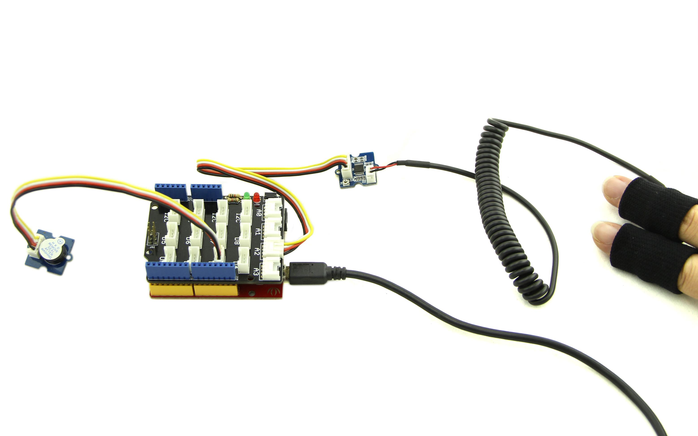
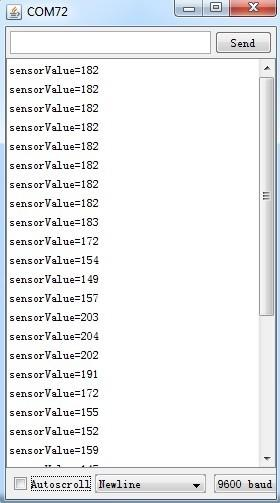
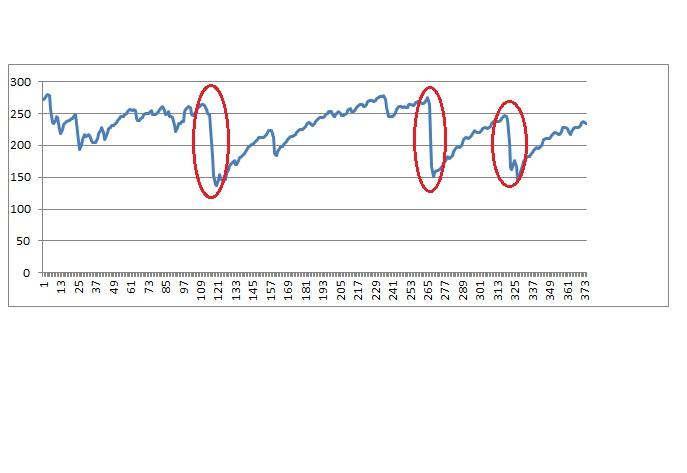
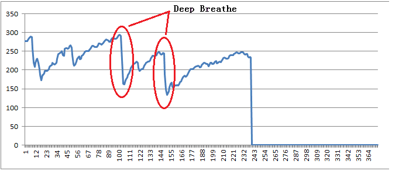
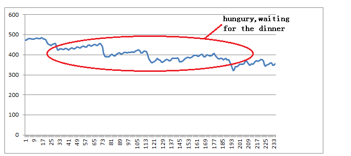
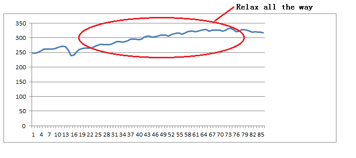
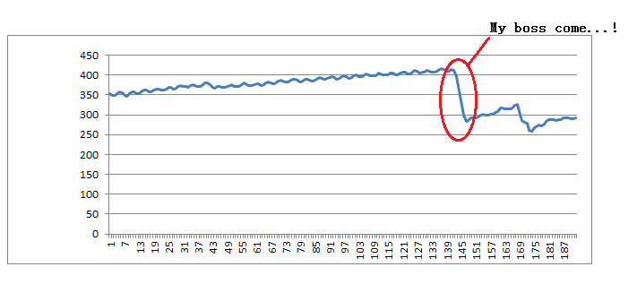

GSR, standing for galvanic skin response, is a method of measuring the electrical conductance of the skin. Strong emotion can cause stimulus to your sympathetic nervous system, resulting more sweat being secreted by the sweat glands. Grove – GSR allows you to spot such strong emotions by simple attaching two electrodes to two fingers on one hand, an interesting gear to create emotion related projects, like sleep quality monitor.
SKU: SEN01400P
In the following we are showing you how to use the Grove - GSR.
Connect Grove - GSR Sensor to the analog port A2 of Grove-Basic Shield and Grove - Buzzer to digital port 3.

Copy and paste the code below to a new Arduino sketch and upload it to Arduino.
const int BUZZER=3;
const int GSR=A2;
int threshold=0;
int sensorValue;
void setup(){
long sum=0;
Serial.begin(9600);
pinMode(BUZZER,OUTPUT);
digitalWrite(BUZZER,LOW);
delay(1000);
for(int i=0;i<500;i++)
{
sensorValue=analogRead(GSR);
sum += sensorValue;
delay(5);
}
threshold = sum/500;
Serial.print("threshold =");
Serial.println(threshold);
}
void loop(){
int temp;
sensorValue=analogRead(GSR);
Serial.print("sensorValue=");
Serial.println(sensorValue);
temp = threshold - sensorValue;
if(abs(temp)>50)
{
sensorValue=analogRead(GSR);
temp = threshold - sensorValue;
if(abs(temp)>50){
digitalWrite(BUZZER,HIGH);
Serial.println("YES!");
delay(3000);
digitalWrite(BUZZER,LOW);
delay(1000);}
}
}
Wear the finger sheath and relax, Now open serial monitor, we can see:

Then take a deep breath. The buzzer should buzz now. And an obvious change in the output value should be observed.
The below is a graphs which is created in Excel using the data above. X axis represents time. and Y axis GSR data.

There are several graphs which are created in excel using GSR data.You can open the File:GSR sensor data.xls to see the detail data.


Grove - GSR Eagle File
LM324 datasheet